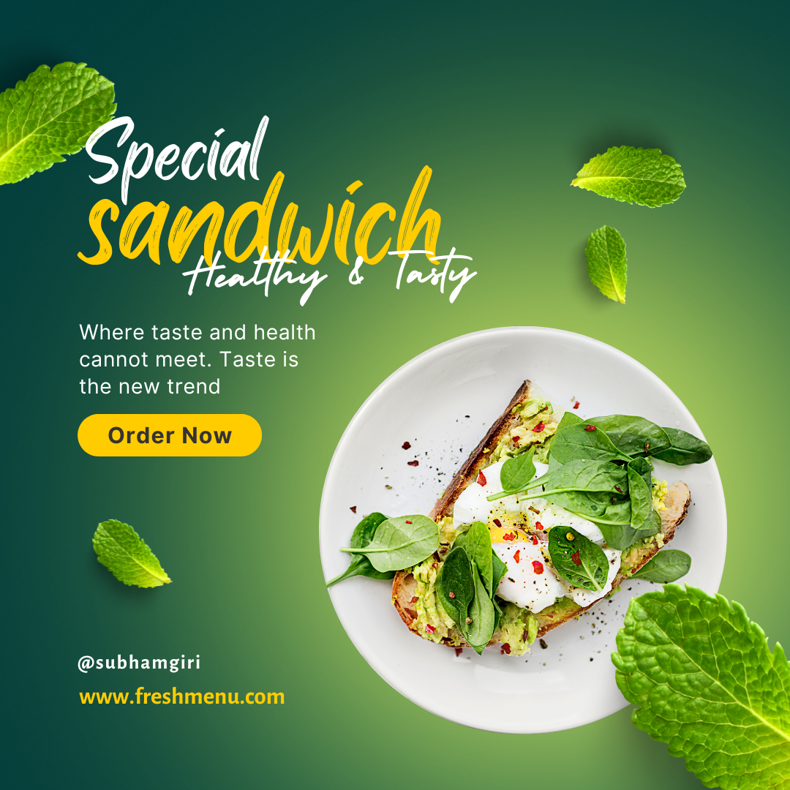
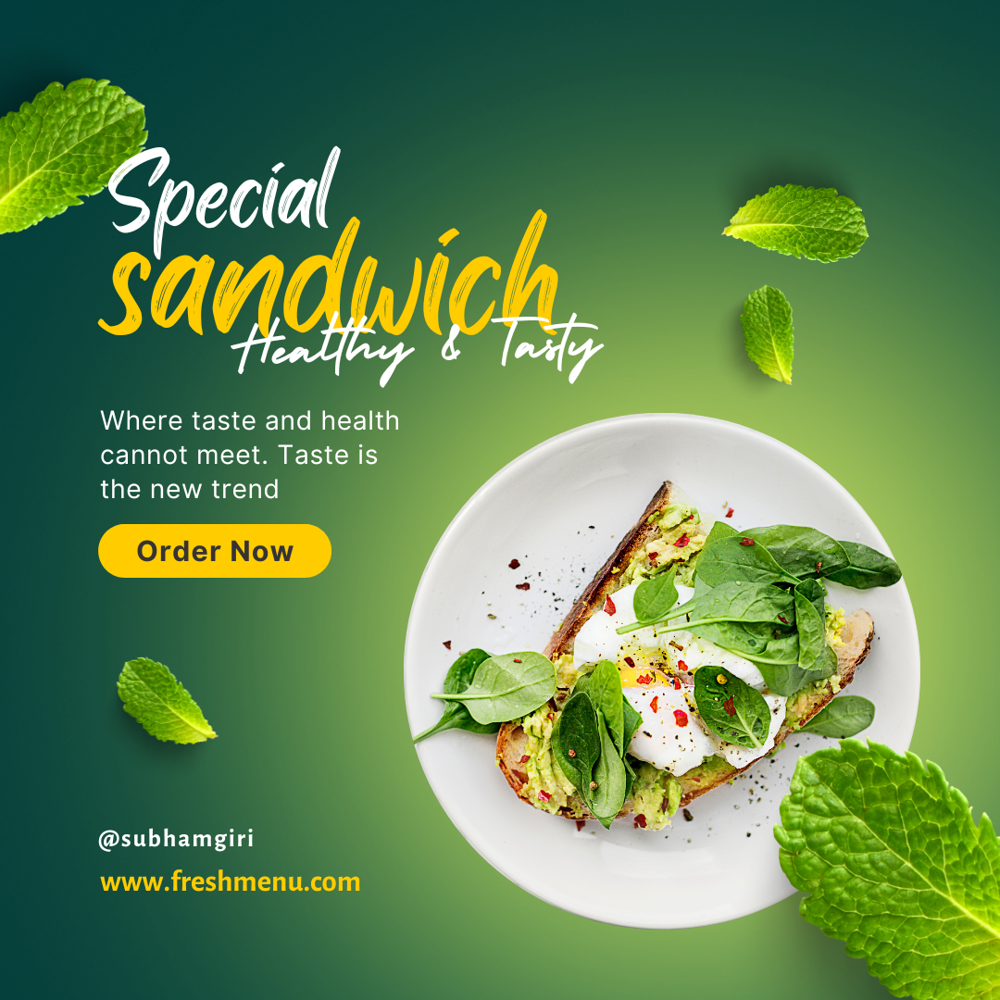

As a passionate and skilled graphic designer, I have had the pleasure of creating a diverse array of captivating social media posters, each design tailored to make a lasting impact in the digital realm. Working with a wide range of clients and industries, I have strived to understand their unique goals and brand identities to craft posters that effectively communicate their messages.
For an adventurous travel agency, I designed posters that transported viewers to exotic destinations with stunning landscapes and immersive imagery. By blending vibrant colors and adventurous typography, these posters ignited wanderlust and encouraged travelers to embark on unforgettable journeys.
In contrast, I collaborated with a local non-profit organization, designing social media posters that conveyed compassion and urgency for their cause. Using emotive visuals and powerful call-to-action statements, these posters effectively rallied support and mobilized the online community to make a difference.
Furthermore, I worked with a dynamic tech startup, where I designed sleek and modern posters that showcased their innovative products and services. Employing cutting-edge graphics and minimalist layouts, these posters mirrored the company's forward-thinking approach and appealed to tech-savvy audiences.
From promoting special offers for an e-commerce business to encouraging fitness enthusiasts to pursue their goals for a health and wellness brand, I have embraced the challenge of creating engaging and visually appealing social media posters that resonate with diverse audiences.
Witnessing the positive reception and impact of these designs has been incredibly rewarding, as the posters have facilitated increased engagement, brand awareness, and conversions for my clients. As I continue to push the boundaries of creativity and design, I eagerly anticipate the opportunity to craft even more impactful social media posters that leave a lasting impression in the fast-paced digital landscape.